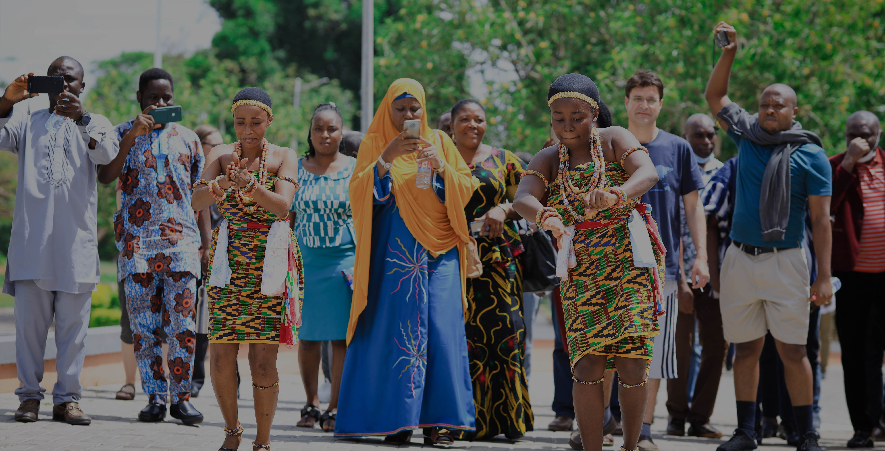

Fellowships/Awards and Recognitions

The Mathematics department was awarded the overall best department for two consecutive years.
- Member, Governing Council of the International Biometric Society, Ghana Rep.
- Elected Member, International Statistical Institute; 2020
- Senior Research Scientist Fellowship of Women for Africa Foundation utilised at the Institute of Mathematical Sciences, Madrid, Spain; 2017.
- Fellow, African Scientific Institute; 2016 – Date.
- Association of African Universities staff exchange fellowship, utilised at the Department of Applied Mathematics, University for Development Studies; 2009.
- World Organization for Women in Science one-year postgraduate Fellowship award utilised at the School of Mathematics, University of Nairobi, Kenya; 2007 - 2008.
Workshops
Transforming Evidence to Action, Capacity in Higher Education (TEACH) capacity building workshop for the Regional Transport Research and Education Centre, Kumasi (TRECK).
- Applied Bayesian School (ABS17), Villa del Grumello, Como (Italy), June 19 - 23, 2017.
- LISA 2020 Global Sustainability Symposium, 01-05 May 2022.
- 30th International Biometric Conference (IBC 2020), Sept to Oct 2020.
- Virtual Third LISA 2020 symposium, Building Capacity to Transform Evidence to Action, Nov – Dec 2020.
- Second LISA 2020 symposium, Statistical Consulting and Collaborative Research, August 15 – 18, 2019, Kuala Lumpur.
- Dialogue on Innovative Higher Education Strategies (DIES)-DAAD Workshop on Navigating Women’s Careers in Higher Education, April 10-12, 2019; Koforidua, Ghana.
- Short course on Compositional data, IBC 2018, July 08, Barcelona Convention Centre, Barcelona, Spain.
- Applied Bayesian Statistics School 2017 (ABS17) Modeling Spatial And Spatio-Temporal Data With Environmental Applications, Villa del Grumello, Como, Italy, June 19 - 23, 2017.
- Total Quality Management Training, Department of Mathematics, KNUST, September 07, 2017.
- Workshop on postgraduate supervision, Noda Hotel, Kumasi, February 07-09, 2012. Organized by Malaria Capacity Development Consortium (MCMC).
- Workshop 3 on Contemporary Problems in Mathematical Physics (COMPROMAPH3). Training course/workshop organized by the International Chair of Mathematical Sciences, University of Calavi, Cotonou, Republic of Benin, Oct 27-Nov 08, 2008.
- Statistics and Statistical Computing with SAS, International Institute of Tropical Agriculture, Ibadan; July 21 - 25, 2008.
- PEDAGOGY Training programme, University of Nairobi, Nairobi, Kenya; October 15 - 19, 2007.
- Leadership and Rapid Response Initiative workshop, University of Nairobi, Nairobi, Kenya; November 7 - 8, 2007.
- Workshop on Longitudinal Data Analysis. A pre-conference course organized by the Sub-Saharan Network of International Biometric Society, Ethiopian Agricultural Research Institute, Addis Ababa, December 10 - 12, 2005.
- Workshop on Modelling in Life, Material Science, and in Technology. Organized by the Abdus Salam International Centre for Theoretical Physics and held at Trieste, Italy, March 05 - April 03, 2004 (Certificate of Attendance awarded).
- 7th Regional College on Modelling, Simulation, and Optimization. Training course organized by the Institute of Mathematical Sciences, Ghana, and sponsored by the Abdus Salam International Centre for Theoretical Physics. Held at the Physics department, University of Cape Coast, Cape Coast Ghana, April 11 – 21, 2005 (Certificate of Attendance awarded).
- Workshop 3 on Contemporary Problems in Mathematical Physics (COMPROMAPH3). Training course/workshop organized by the International Chair of Mathematical Sciences, University of Calavi, Cotonou, Republic of Benin, Nov 01 – 08, 2003 (Certificate of Attendance awarded).
- Workshop on Messy Data Analysis and Enhanced Sampling. Organized by the Sub- Sahara African Network of the International Biometrics Society and sponsored by the Technical Centre for Agricultural and Rural Cooperation (CTA) and held at the University of Natal, Pietermaritzburg, South Africa, July 04 – 06, 2003 (Certificate of Attendance awarded).
- 5th Regional College on Modelling, Simulation, and Optimization. A college organized by the Ghana Atomic Energy Centre and sponsored by the Abdus Salam International Centre for Theoretical Physics. The venue was the University of Ghana, Legon, Accra from June 03 -13, 2003 (Certificate of Attendance awarded).
Show more...
Programs
Global LISA 2020 Sustainability Symposium, KNUST, 01-05 May, 2022.
- 64th World Statistics Congress of the International Statistical Institute (WSC-ISI2023), 16th to 20th July 2023, Ottawa, Canada.
- 31st International Biometric Conference (IBC2022), 10th to 15th July 2022, Riga, Latvia.
- International Statistical Institute (ISI) 62nd World Statistics Congress, 2019, 18-23 August 2019, Kuala Lumpur.
- Meeting of World Women in Mathematics, July 31, 2018; Rio de Janeiro, Brazil.
- International Congress of Mathematics, August 1-9, 2018; Rio de Janeiro, Brazil.
- XXIXth International Biometric Conference, July 8-12, 2018; Barcelona Convention Centre, Barcelona, Spain.
- African European Mediterranean Academies for Science Education (AEMASE), the AEMASE III conference in Paris, France, October 3-4, 2017.
- 5th workshop on games and decisions in risk and reliability, GDRR 2017 at the Academy of Sciences, Madrid, Spain, June 7-9, 2017.
- Fifth General Assembly and International Conference of Women in Science and Technology for the Developing World (OWSD), Kuwait, May 16-19, 2016.
- Biennial Conference of Sub-Sahara Network of International Biometric Society (SUSAN 2013) held at the West End University College, Accra from August 4 - 8, 2013.
- 7th International Salford Analytics and Data Mining Conference, San Diego, California, United States from May 23-25, 2012.
- Biennial Conference of Sub-Sahara Network of International Biometric Society (SUSAN 2011), held at the University of Botswana, Gaborone, June 27 – July 02, 2011.
- Workshop 3 on Contemporary Problems in Mathematical Physics (COMPROMAPH3), University of Calavi, Cotonou, Republic of Benin, Oct 27– Nov 8, 2008.
- Biennial Conference of Sub-Sahara Network of International Biometric Society (SUSAN 2005) held at the Ethiopian Institute of Agricultural Research, Addis Ababa, December 12 – 16, 2005.
- Statistics in Chemistry and Chemical Engineering. Gordon Research Conference, Mt Holyoke College, South Hadley, MA, USA, July 17– 22, 2005.
- Science for National Development (COLNAS 2004), College of Natural Sciences, University of Agriculture, Abeokuta, Nov 11-16, 2004.
- XXIINDInternational Biometrics Conference (IBC 2004) parallel with Australian Statistical Conference (ASC 2004), Cairns, Australia, July 11-16, 2004.
- Workshop 2 on Contemporary Problems in Mathematical Physics (COMPROMAPH2), University of Calavi, Cotonou, Republic of Benin, Nov 1– 8, 2003.
- African Mathematical Union-International Conference of Mathematical Sciences (AMU-ICMS), University of Agriculture, Abeokuta, Nigeria, Nov 16 – 22, 2003.
- Biennial Conference of Sub-Sahara Network of International Biometric Society (SUSAN 2003), Biometrics Department, University of Natal, Pietermaritzburg, South Africa, July 7-11, 2003.
Show more...
Research
Building Capacity of Female Scientists in Data Analysis for Decision making and Strategic Planning.
- Nonlinear multi-block data analysis (2022-date).
- SEM model for pedestrian safety on motorways (2022).
- Modeling of vehicular traffic emissions and its implications on public health for selected roadways in Lagos, Nigeria: a West African city (2021-2023).
- Geospatial modeling of the effects of traffic noise exposure along selected road corridors in Kumasi (2021-2023).
- Data-Driven Modeling of Projected Mitigation and Suppressing Strategy Interventions for SARS-COV 2 in Ghana (2020).
- Dynamic linear models for policy monitoring (2017-2020).
- Statistical Modeling of COVID19 data.
- Association of Iron Supplementation and anaemia in Pregnancy (2021).
- Optimal Pricing Model For Risky Assets in a Competitive Market (2018 – 2020).
- Semi-Parametric Estimation in Spatial Hierarchical Models (2018 – 2020).
- Comparative Power Analysis and Parameter Estimation Methods For Structural Equation Modelling (2016 – 2020).
- Improved weighted information criterion for model selection in multivariate time series analysis (2017-2018).
- Determinants of specialty choice at a Lagos teaching hospital (2015).
- Statistical methods for public health policy intervention performance evaluation (Bayesian and Spatial approaches) (2015 – 2018).
- Comparative Analysis of Quadratic Discriminant Function (QDF) and Classification and Regression Tree (CART) for predicting Still Birth (2015 -2017).
- Modeling Domestic Tourism Demand For Ghana (2015 - 2020).
- Performance of Robust regression methods to leverages, outliers, and response contamination (a focus on multivariate data applications) (2014 – 2016).
- Modeling neonatal and postpartum length of stay (studies in Sunyani and Tamale) (2014 – 2015).
- Performance of Zero means classification function on High dimension small sample-sized data (a focus on genotype matching and misclassification costs) (2014 -2017).
- Statistical evaluation of face recognition techniques using different pre-processing methods and variable environmental constraints; An extension of discrimination to biometric verification (2014 – 2016).
- ARIMA Noise Model for segmented intervention Analysis (2014).
- Comparative analysis of some robust regression (2014).
- Using Holt Winter’s Multiplicative Model To Forecast Assisted Childbirths At The Teaching Hospital In Ashanti Region, Ghana (2013-2014).
- Robustness of the Quadratic discriminant functions to non-classical parametric model assumptions (2012-2015).
- Average Time to Justice Delivery; A Case Study in the Upper West and East Regional District and Circuit Courts in Ghana (2012-2013).
- Empirical Performance of Non-Metric Multidimensional Scaling in Vegetation Studies (2012-2013).
- Optimal Ratio of Continuous to Categorical Variables for the Two Group Location Model (2011-2013).
- Robust Linear Classifier for Unequal Cost Ratios of Misclassification (2011).
- Effects of Mahalanobis distance and Prior probabilities (2010-2011).
- Error Rates Stability of the Homoscedastic Discriminant Function (2010).
- Effects of Sample Size Ratio on the Performance of the Quadratic Discriminant Function (2010).
Show more...
Grants
KNUST-LISA Training in Statistical Data Analysis and Data Visualization workshop for fifth and sixth year Optometry and Visual Science students, KNUST; 20-24 January 2020.
- 2023: KNUST travel grant (GHC 10,000) to attend the 64th International Statistical Institute World Statistics Congress, 15th to 20th July, 2023, at Ottawa, Canada.
- 2022: International Biometric Society Travel grant (USD 1,900) to attend 31st International Biometric Conference, 10th -15th July 2022, at Riga, Latvia.
- 2022: LISA 2020 grant (USD 35,000) to host the Global LISA Sustainability Symposium at KNUST, Kumasi.
- 2022: Technical University of Munich, KNUST, and Moi University VolkswagenStifung Research Grant (€86,000) for postgraduate training in Biostatistics.
- 2021: Technical University of Munich Global Incentive Fund 2021 (€10,000) for faculty Exchange in collaboration with Prof Aurelien Tellier and Prof Olivier Pamen.
- 2020: International Statistical Institute (ISI) USD 8,300 grant for KNUST-LISA Regional Symposium and World Statistics Day, October 2020.
- 2020: Transforming Evidence to Action Capacity in Higher Education (TEACH) Fund of Eleven Thousand US Dollars (USD 11,000), for staff Students‘ capacity building, in collaboration with the Regional Transport Research and Education Centre, Kumasi (TRECK); July 2020 to June 2021.
- 2019: Travel Grant of USD 3,000 to attend LISA 2020 Symposium, August 18 – 23, 2019, Kuala Lumpur, Malaysia.
- 2019: Travel grant to attend International Statistical Institute (ISI) 62nd World Statistics Congress, August 18 – 23, 2019, Kuala Lumpur, Malaysia.
- 2019: Travel Grant to attend Dialogue on Innovative Higher Education Strategies (DIES-DAAD) workshop on “Navigating Women’s Career in Higher Education”, 10 – 12 April, 2019, at Koforidua.
- 2019: Lead facilitator KNUST-LISA USD 75,000 Building Capacity of Female Scientists in Data Analysis for Decision making and Strategic planning USAID/University of Colorado Boulder, USA.
- 2019: CAL BANK Four Thousand Ghana Cedis (Gh₵ 4,000) Grant for WiSTEM-KNUST 2019 Girls Camp.
- 2019: Vodafone Twenty five Thousand Ghana Cedis (Gh₵ 25,000) Grant for 2019 KNUST-WiSTEMGh Senior High School Girls’ STEM Camp, July 19-24, 2019.
- 2018: Vodafone Thirty Thousand Ghana Cedis (Gh₵ 30,000) Grant for the launch of WiSTEMGh.
- 2018: Institute of Mathematical Sciences (ICMAT), Spain, Travel Grant to attend XXIX International Biometric Conference (IBC2018) in Barcelona, Spain from 8-13 July, 2018.
- 2018: International Mathematics Unions Open Arms travel grant to attend the International Congress of Mathematicians (ICM 2018) in Rio De Janeiro Seven Thousand Eight Hundred Reais (7,800 Reais).
- 2018: International Mathematics Union Centre for Developing Countries (CDC) Visiting Lecturer’s Grant for the visit of Prof Fabrizio Ruggeri to teach postgraduate statistics course in the Department of Mathematics in March to April 2019. Prof Ruggeri is the Research Director at the National Research Centre (IMATI-CNR) in Milan, Italy.
- 2017: Mujeres Por Africa/Institute of Mathematical Sciences six months research award Twenty Thousand Euros (€20,000) utilized in 2017.
- 2017: African European Mediterranean Academies for Science Education (AEMASE), Travel Grant to attend AEMASE III conference in Paris, France, October 3-5, 2017.
- 2017: Institute of Mathematical Sciences (ICMAT), Spain, Travel Grant to attend Applied Bayesian School (ABS17), Villa del Grumello, Como (Italy), 19th – 23th June, 2017.
- 2017: Participation and Travel fees: 5Th workshop on games and decisions in risk and reliability. GDRR 2017 at the Academy of Sciences, Madrid, Spain, 7-9 June, 2017.
- 2016: OWSD Travel Grant to attend Fifth General Assembly and International Conference of the Organization for Women in Science and Technology for the Developing World (OWSD), May 16-19, 2016, Kuwait.
- 2013: Lead facilitator and Initiator of a postgraduate research grant in reservoir simulation awarded by Petroleum Geo-Services (PGS) and Norwegian Academy of Science and letters, Seven Hundred and Fifty Thousand Euros (€750,000), implemented by National Institute of Mathematical Sciences (NIMS).
- 2012: Facilitator of PhD grant by the African Mathematics Millennium Science Initiative to 3 awardees of the Department of Mathematics: Nana Kena Frempong, Derrick Asamoah Owusu, and Elikem Yaw Ayekple, Three Thousand Seven Hundred and Fifty US Dollars ($ 3750).
- 2012: KNUST Travel Grant to attend 7th International Salford Analytics and Data Mining Conference, San Diego, California, United States from May 23-25, 2012.
- 2011: GTZ travel grant to attend the Biennial conference of the Sub Sahara Africa Network (SUSAN) of the International Biometric Society in Gaborone, Botswana.
- 2009: Association of African Universities (AAU) Staff Exchange fellowship 2008/2009.
- 2008: International Chair of Mathematical Physics travel grant to attend Workshop 5 on Contemporary Problems in Mathematical Physics (COMPROMAPH3). Training course/workshop organized by the International Chair of Mathematical Sciences, University of Calavi, Cotonou, Republic of Benin, 27th Oct– 8th Nov 2008 (Certificate of Attendance awarded).
- 2005: Third World Organization for women in Science for Developing World one-year postgraduate Fellowship award utilized at the School of Mathematics, University of Nairobi, Kenya 2007 - 2008.
- 2005: CTA Travel Grant to attend CTA-IBS sponsored 9th Scientific Conference of the Sub-Saharan Network of International Biometric Society with the theme ‘Linking Agriculture, Nutrition and Environment Through Biometry Towards Prosperity and good Health’ held at the Ethiopian Agricultural Research Institute, Addis Ababa, Ethiopia, Dec 12th – 16th 2005.
- 2005: Gordon Research Conference (GRC) Travel Grant to participate in the GRC conference Statistics in Chemistry and Chemical Engineering, held at Mt Holyoke College, South Hadley, MA, USA. 17th – 22nd July 2005.
- 2004: Abdus Salam International Centre for Theoretical Physics (ICTP) Travel Grant to attend the Workshop on Modelling in Life and Material Workshop on Modelling in Life, Material Science, and in Technology. Organized by the Abdus Salam International Centre for Theoretical Physics and held at ICTP Trieste, Italy, 5th March-3rd April 2004.
- 2004: CTA-IBS Travel Grant to attend the XXIIND International Biometrics Conference (IBC 2004) in parallel with the Australian Statistical Conference (ASC 2004), held at the Convention Centre Cairns, Australia, 11-16 July 2004.
- 2003: International Biometric Society (IBS) travel grant to attend the IBS-sponsored Biennial Conference of Sub-Sahara Network of International Biometric Society (SUSAN 2003), held at the Biometrics Department of the University of Natal, Pietermaritzburg, South Africa 7th-11th July 2003.
- 2003: International Chair of Mathematical Physics travel grant to attend the third International Workshop on Contemporary Problems in Mathematical Physics (COMPROMAPH3). Training course/workshop organized by the International Chair of Mathematical Physics, University of Calavi, Cotonou, Republic of Benin, 1st – 8th Nov 2003.
Show more...
Projects

Hosting the Global LISA 2020 Symposium, May 2022.
- 2022: Co-PI and resource person at the Summer School on Application of Biomathematics and Biostatistics on Genomics and Epidemiology, at Eldoret, Kenya, from 12th to 24th March 2023. Project funded by Volkswagen Foundation (€86,000).
- 2022: Organizer of Global LISA 2020 Sustainability Symposium at KNUST from 01 to 05 May 2022. LISA 2020 grant (USD 35,000).
- 2021: Co-PI, Technical University of Munich Global Incentive Fund 2021 (€10,000) for faculty Exchange in collaboration with Prof Aurelien Tellier and Prof Olivier Pamen.
- 2020: International Statistical Institute (ISI) USD 8,300 grant for KNUST-LISA Regional Symposium and World Statistics Day, October 2020.
- 2020: Transforming Evidence to Action Capacity in Higher Education (TEACH) Fund of Eleven Thousand US Dollars (USD 11,000) for staff Students‘ capacity building, in collaboration with the Regional Transport Research and Education Centre, Kumasi (TRECK); July 2020 to June 2022.
- 2019: Lead facilitator KNUST-LISA USD 75,000 Building Capacity of Female Scientists in Data Analysis for Decision making and Strategic planning USAID/University of Colorado Boulder, USA.
- 2019: CAL BANK Four Thousand Ghana Cedis (Gh₵ 4,000) Grant for WiSTEM-KNUST 2019 Girls Camp.
- 2019: CAL BANK Four Thousand Ghana Cedis (Gh₵ 4,000) Grant for WiSTEM-KNUST 2019 Girls Camp.
- 2019: Vodafone Twenty five Thousand Ghana Cedis (Gh₵ 25,000) Grant for 2019 KNUST-WiSTEMGh Senior High School Girls’ STEM Camp, July 19-24, 2019.
- 2018: Vodafone Thirty Thousand Ghana Cedis (Gh₵ 30,000) Grant for the launch of Women in Science, Technology, Engineering and Mathematics, Ghana (WiSTEMGh).
Show more...